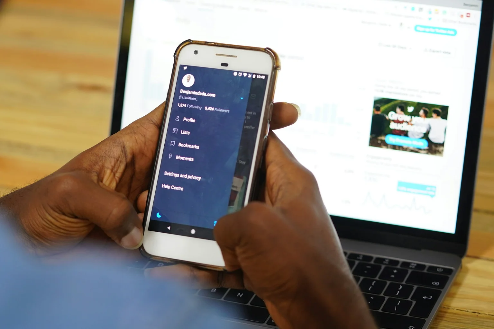
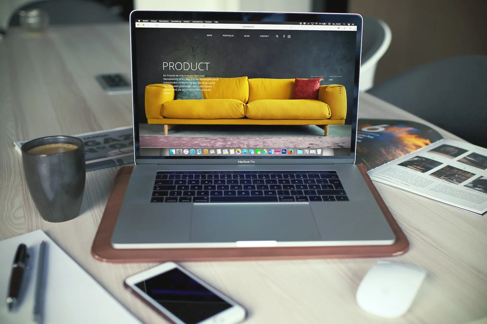

Animações e rolagem no site: quando ajudam e quando atrapalham o contato
Veja a diferença em movimento.
O mesmo objetivo: sair da apresentação do serviço e chegar ao contato. Compare uma transição direta com uma sequência que exige espera.
Demonstração didática da UNO Labs. Os tempos são definidos para este exemplo; não são resultados de um teste de conversão.

Transição direta
350 ms de movimentoO movimento explica a mudança e libera o próximo passo.
Sequência demorada
4,7 s até o destinoA espera ganha espaço, mesmo sem acrescentar informação necessária.
A demonstração está pronta.
Na comparação animada acima, as duas versões chegam ao mesmo destino. Use os controles para pausar, repetir e observar o que acontece enquanto o contato ainda não apareceu. A sequência é didática: ela ajuda a discutir o custo da espera, sem medir a conversão de uma empresa.
Um site pode prender o olhar e, ao mesmo tempo, dificultar uma tarefa simples. A diferença aparece quando a pessoa tenta chegar ao serviço, entender o investimento ou pedir uma proposta.
Em sites de arquitetura, engenharia e consultoria, o movimento pode explicar uma transformação ou revelar etapas de um projeto. Mas permanecer mais tempo diante de uma animação não comprova interesse comercial. Este guia propõe critérios para decidir se o recurso merece continuar.
Nem toda seção fixa interrompe a navegação
Há diferenças entre manter uma imagem visível enquanto o texto passa, avançar uma sequência de cenas com a rolagem e interceptar os comandos para obrigar a pessoa a seguir um roteiro. Esses comportamentos podem parecer semelhantes em uma apresentação, mas pedem esforços diferentes durante o uso.
Uma seção com posição fixa pode ser útil quando mantém uma referência junto da explicação. O problema começa quando o deslocamento do dedo ou da roda do mouse deixa de produzir o movimento esperado, sem uma indicação clara do que está acontecendo.
Observe também o acesso direto. A pessoa que quer apenas encontrar um telefone não deveria precisar assistir a todas as etapas de uma demonstração. Oferecer um atalho preserva a narrativa para quem deseja explorá-la e respeita outros objetivos.
Qual informação o movimento torna mais clara?
Antes de escolher uma biblioteca de efeitos, complete a frase: “O movimento ajuda o visitante a entender…”. Se a resposta for apenas “que o site é moderno”, falta uma função concreta para justificar o custo de atenção.
Em um exemplo hipotético de escritório de arquitetura, uma transição entre planta e ambiente pode explicar uma decisão de projeto. Já um título que permanece preso na tela durante várias rolagens, sem acrescentar informação, pode adiar o acesso ao portfólio.
Uma boa avaliação considera compreensão, controle e desempenho. É possível ter uma animação tecnicamente suave, mas narrativamente desnecessária. Também é possível ter uma explicação valiosa que precise de uma apresentação mais simples no celular.
O critério não é remover toda expressão visual. É fazer com que a execução acompanhe o propósito da página: apresentar o negócio e facilitar uma decisão informada.
Teste a tarefa antes de interpretar o tempo na página
Peça a alguém próximo do público para encontrar um serviço e explicar como entraria em contato. Não diga onde clicar nem como atravessar a sequência. Observe o que a pessoa faz, incluindo pausas, tentativas de voltar e procura por atalhos.
- Ela entende que a página ainda está avançando?
- Consegue interromper a experiência e acessar outra seção?
- O conteúdo continua disponível ao navegar pelo teclado?
- Consegue voltar sem perder a referência de onde estava?
- Depois da sequência, explica o serviço com mais clareza?
Pergunte ao final o que pareceu funcionar e o que causou dúvida. Evite perguntas que induzem elogios, como “Você gostou da animação?”. Uma pessoa pode gostar do visual e ainda falhar ao tentar localizar o orçamento.
Meça o percurso, sem transformar permanência em vitória
Para uma sequência interativa, pode fazer sentido registrar entrada, conclusão, uso do atalho e acesso à seção seguinte. Os nomes dos eventos são uma decisão da implementação; por exemplo, journey_enter, journey_complete e journey_skip. Eles não são eventos automáticos universais.
Defina uma regra para evitar repetição quando a pessoa avança e volta. Compare sessões que tiveram oportunidade de ver o recurso. Não divida conclusões de um período pelas entradas de outro.
Uma taxa alta de uso do atalho não torna o recurso automaticamente ruim. Visitantes recorrentes podem já conhecer a apresentação. Da mesma forma, concluir a sequência não comprova entendimento. Combine comportamento com o teste de tarefa e com o acesso ao conteúdo comercial.
Se necessário, deslize a tabela para ver todas as colunas.
| Observação | Hipótese a investigar | Próximo teste |
|---|---|---|
| Mais tempo e menos acesso aos serviços | A sequência pode atrasar a tarefa | Versão mais curta com atalho visível |
| Muitos avanços e retornos | Controle ou conteúdo pode estar confuso | Rótulos e navegação previsíveis |
| Abandono concentrado no celular | Gesto, altura da tela ou peso pode atrapalhar | Versão estática com conteúdo equivalente |
| Pessoas explicam melhor o serviço | O recurso pode ter valor informativo | Preservar a explicação e avaliar o restante do caminho |
Respeite quem prefere menos movimento
Algumas pessoas têm dificuldade ou desconforto com movimentos intensos. A preferência do sistema por movimento reduzido, consultada com prefers-reduced-motion, permite oferecer uma alternativa mais estável. A referência da MDN explica esse mecanismo.
A alternativa precisa preservar a informação. Desligar uma animação que era a única forma de revelar o texto pode tornar a página incompleta. É melhor deixar o conteúdo acessível por padrão e adicionar movimento como melhoria.
Confira foco de teclado e links de salto. Cabeçalhos fixos não devem cobrir o título da seção de destino. Se um bloco mantém o foco preso ou dificulta sair da área, a navegação merece correção independentemente dos números de conversão.
Esses cuidados beneficiam tanto quem explora o site com calma quanto quem precisa resolver uma tarefa rapidamente.
No celular, o desenho da interação precisa mudar quando necessário
Uma tela menor muda a quantidade de conteúdo visível, a área de toque e a relação entre imagem e texto. Barras do navegador e teclado também alteram o espaço disponível. Simular uma largura menor no computador é útil, mas não substitui testar em aparelhos reais.
Em uma narrativa com elementos presos, verifique se a pessoa consegue ler sem que a próxima cena apareça cedo demais. Teste orientação vertical e horizontal, zoom e uma conexão limitada. O carregamento não deve deixar a interface esperando por um vídeo pesado para mostrar o serviço.
Quando a experiência fica difícil, uma sequência de blocos estáticos pode comunicar o mesmo processo. O Google recomenda conteúdo principal equivalente entre celular e computador; simplificar a apresentação não deve apagar informações importantes.
Mantenha, ajuste ou remova com uma justificativa
Mantenha quando o movimento explica algo importante, o visitante conserva o controle e a tarefa continua fluida. Ajuste quando a ideia é útil, mas demora, exige gestos pouco claros ou funciona mal em uma tela. Remova quando a versão estática comunica melhor e o efeito só prolonga a passagem.
Registre o motivo da decisão. “Queremos um site mais impactante” é uma intenção ampla; “queremos mostrar a relação entre três etapas do serviço” é uma função que pode ser avaliada. A segunda permite construir uma experiência visual com critério.
A UNO Labs considera design e construção técnica partes da mesma entrega. Um recurso de destaque precisa contribuir para explicar o valor da empresa, sem esconder serviços ou contato. Para avaliar outras barreiras, veja o guia de conversão no celular e o diagnóstico de visitas sem contatos.
Perguntas frequentes
Animação prejudica o SEO?
Não automaticamente. O problema pode surgir quando ela impede o acesso ao conteúdo, piora o carregamento ou dificulta o uso. Ter ou não ter animação, isoladamente, não determina uma posição no Google.
Rolagem presa é sempre uma escolha ruim?
Não. Ela pode sustentar uma explicação visual. Precisa ter um propósito, manter o controle do visitante e funcionar com teclado, celular e preferência por movimento reduzido.
Devo remover as animações no celular?
Avalie cada recurso. Às vezes basta simplificar a transição ou reduzir a duração. Em outros casos, uma composição estática preserva melhor o conteúdo e a facilidade de navegação.
Fontes e referências
O movimento do seu site tem uma função clara?
Converse com a UNO Labs sobre uma experiência que valorize o seu negócio e mantenha o caminho até o contato simples de percorrer.
Conversar sobre a experiência do site